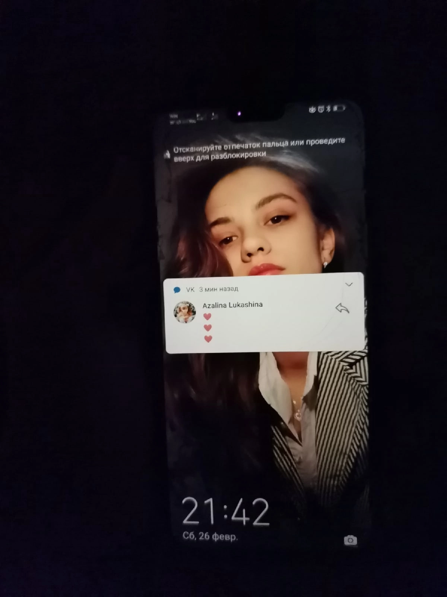

Вечер, тьмы пелена за окном
Я хожу, собирая вещи
Завтра мне покидать родной дом.
Но куда подевалось то чувство?
Та гнетущая, тихая грусть
Грусть о том, что я путник идущий
Неизвестно когда я вернусь.
Я открою секрет – её нету.
Ведь я еду навстречу судьбе
Моя девочка Азя, я еду.
Как же сильно хочу я к тебе!!!
И в душе моей ярко пылая
Жарким пламенем искра зажглась.
Мысль о том, что ты ждёшь меня верно
Мысль о том, что мечта всё ж сбылась.
Одна из первых твоих фотографий, что ты мне отправила, я помню как ты прислала несколько и я никак не мог выбрать какую же из них поставить на обои в телефоне)) Слишком тяжелый выбор между одной шикарной фоткой и другой.
Вот как можно выбрать между такими классными фотками?Я сидел выбирал, а потом посоветовался с тобой и ты сказала "Вот эту ставь))"
